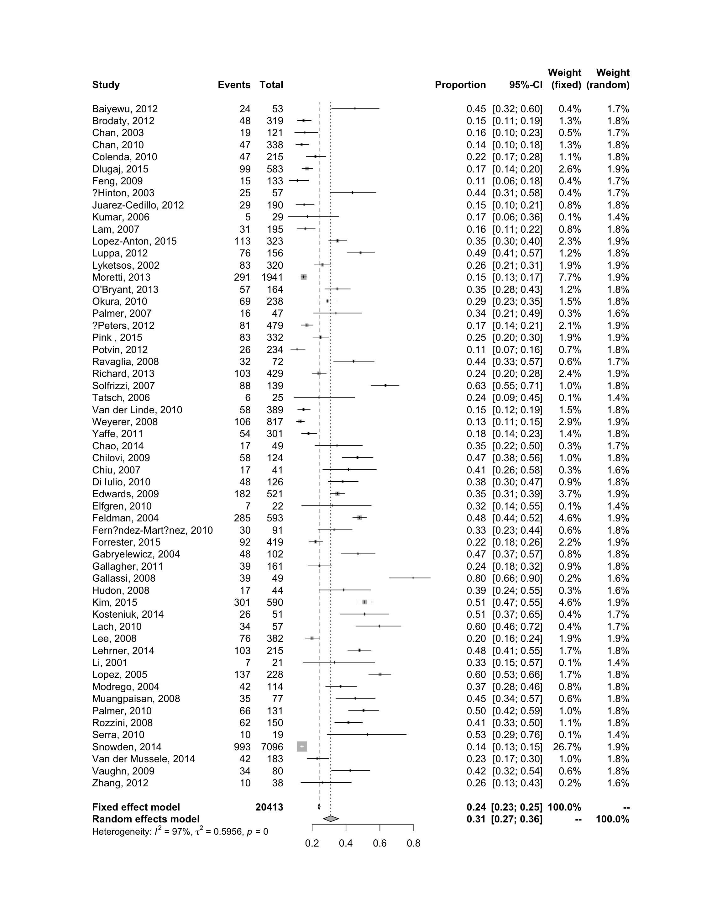

Chapter 2 Binary and Continuous data
Example 1 - Binary data
Binary data: BCG example (Read the paper by Colditz JAMA 1994 for details)
Using command metabin in the meta package
Read in the data
| trial | trialnam | authors | pubyr | startyr | latitude | alloc | tcases | tnoncases | ccases | cnoncases | ttotal | ctotal |
|---|---|---|---|---|---|---|---|---|---|---|---|---|
| 1 | Northern USA | Aronson | 1948 | 1935 | 52 | 1 | 4 | 119 | 11 | 128 | 123 | 139 |
| 2 | Canada | Ferguson & Simes | 1949 | 1933 | 55 | 1 | 6 | 300 | 29 | 274 | 306 | 303 |
| 3 | UK | Hart & Sutherland | 1977 | 1950 | 53 | 1 | 62 | 13536 | 248 | 12619 | 13598 | 12867 |
| 4 | Madanapalle | Frimont-Moller et al | 1973 | 1950 | 13 | 0 | 33 | 5036 | 47 | 5761 | 5069 | 5808 |
| 5 | Haiti | Vandeviere et al | 1973 | 1965 | 18 | 1 | 8 | 2537 | 10 | 619 | 2545 | 629 |
| Covariates | Meaning |
|---|---|
| pubyr | year of publication |
| startyr | year of start of trial |
| latitude | latitude of study |
| alloc | method of allocation. (1:random allocation, 0:Alternation/systematic allocation) |
For binary (count) data, metabin requires either two or four variables to be declared.
1a. Four variables (2x2 data)
The four-variable command is for the raw binary data (usually from a trial), and the order has to be: the number of events in the treatment group, the number of subjects in the treatment group, the number of events in the control group, the number of subjects in the control group. A number of options are available for this command.
Now type:
library(meta)
bcg.iv <- metabin(tcases,ttotal,ccases,ctotal,studlab=trialnam,method="I",sm="RR",data=bcg)First use library command to load the add-on meta package, then use the metabin command to conduct a meta-analysis, and save the results in the object bcg.iv.
sm=("RR", "OR", "RD")
| Summary measures | R code |
|---|---|
| Risk ratio | sm=“RR” |
| Odds ratio | sm=“OR” |
| Risk difference | sm=“RD” |
And the statistical methods for pooling: method=("Inverse", "MH", "Peto").
Then type bcg.iv to call the results of the analysis.
## RR 95%-CI %W(fixed) %W(random)
## Northern USA 0.4109 [0.1343; 1.2574] 0.7 6.3
## Canada 0.2049 [0.0863; 0.4864] 1.1 7.7
## UK 0.2366 [0.1793; 0.3121] 10.8 11.1
## Madanapalle 0.8045 [0.5163; 1.2536] 4.2 10.3
## Haiti 0.1977 [0.0784; 0.4989] 1.0 7.3
## Madras 1.0120 [0.8946; 1.1449] 54.6 11.5
## South Africa 0.6254 [0.3926; 0.9962] 3.8 10.1
## Chicago 0.2538 [0.1494; 0.4310] 3.0 9.8
## Puerto Rico 0.7122 [0.5725; 0.8860] 17.4 11.3
## Georgia (Sch) 1.5619 [0.3737; 6.5284] 0.4 4.9
## Georgia (Comm) 0.9828 [0.5821; 1.6593] 3.0 9.8
##
## Number of studies combined: k = 11
##
## RR 95%-CI z p-value
## Fixed effect model 0.7305 [0.6668; 0.8002] -6.75 < 0.0001
## Random effects model 0.5080 [0.3361; 0.7679] -3.21 0.0013
##
## Quantifying heterogeneity:
## tau^2 = 0.3818 [0.1425; 1.5389]; tau = 0.6179 [0.3774; 1.2405];
## I^2 = 92.0% [87.7%; 94.8%]; H = 3.54 [2.86; 4.40]
##
## Test of heterogeneity:
## Q d.f. p-value
## 125.63 10 < 0.0001
##
## Details on meta-analytical method:
## - Inverse variance method
## - DerSimonian-Laird estimator for tau^2
## - Jackson method for confidence interval of tau^2 and tauTo draw the forest plot, type:

Let’s play with metabin for a while. You can view all the options of metabin by typing help(metabin) in the console window.
1b. Two variables
Two-variable commands are for generic (pre-calculated) effect size and standard error. For most observational studies, we prefer to use the adjusted effect size (e.g., odds ratio or hazards ratio) over the crude data, because confounding is often a concern in observational studies. Note that for relative measure (rate ratio, risk ratio, hazard ratio, or odds ratio) the effect sizes need to be in log transformed format and the standard error is that for log (effect size).
Two variables: metagen(logRR, selogRR, studlab=trialnam,sm="RR",data=bcg)
In the command window, type:
bcg$logRR <- log( (bcg$tcases/bcg$ttotal) / (bcg$ccases/bcg$ctotal) )
bcg$selogRR <- sqrt( 1/bcg$tcases +1/bcg$ccases -1/bcg$ttotal -1/bcg$ctotal ) (This generates the necessary input for the two-variable command)
Then type: bcg.iv.2 <- metagen(logRR, selogRR, studlab=trialnam, sm="RR", data=bcg)
You would expect to obtain the same results using the four-variable or two-variable options by the inverse variance method
1c. Alternative methods for fixed-effect analysis
Use the BCG trial data and the four-variable (type 1) command:
What pooling method was used? inverse variance? Mantel-Haenszel? Peto?
What is the summary RR and 95% CI, and what is your interpretation?
Using the four-variable command, compare the results from two different methods, one using method="I" and one using method="MH" option. Are the summary RR the same? Why? Which one would you use in this example? Which option would be available if you only have the two-variable data?
1d. Random-effects model
Now compare the results of fixed-effect model and random-effects model. How are the summary RRs different? Which one has a larger protective effect (smaller RR) and why? Look at the weights of the studies in the two models, what do you find? Which model would you use?
1e. Heterogeneity assessment
Continue with the BCG dataset.
bcg.iv.random <- metabin(tcases,ttotal,ccases,ctotal,studlab=trialnam,method="I",sm="RR",data=bcg, comb.fixed=F)
forest(bcg.iv.random)Using comb.fixed=F to print results for the random-effects model only.
What measurements of heterogeneity are available? What is your interpretation of each of the indicator?
Another way to look at heterogeneity (and to put the between-study variance, Tau-squared, into context) is to look at the confidence interval of the approximate predictive distribution of a future trial (i.e., the predictive interval). Add the option prediction=T to your command:
bcg.iv.pred <- metabin(tcases,ttotal,ccases,ctotal,studlab=trialnam,method="I", sm="RR",data=bcg, comb.fixed=F, prediction=T)
forest(bcg.iv.pred)
What is the estimated predictive interval and how does it compare to the confidence interval of summary RR? Interpretation of the two intervals?
1f. Exploring the source of heterogeneity
- Now let’s conduct subgroup analyses to explore the potential sources of the huge observed heterogeneity
bcg.sub1 <- metagen(logRR, selogRR, studlab=trialnam, sm="RR", data=bcg, byvar=alloc)
forest(bcg.sub1)
bcg.sub2 <- metagen(logRR, selogRR, studlab=trialnam, sm="RR", data=bcg, byvar=latitude)
forest(bcg.sub2)bcg$lat_bi <- ifelse(bcg$latitude>30,1,0)
bcg.sub3 <- metagen(logRR, selogRR, studlab=trialnam, sm="RR", data=bcg, byvar=lat_bi)
forest(bcg.sub3)How does the effect of BCG change in different subgroups (random vs. nonrandom allocation, high vs. low latitude)? Is the difference statistically significant? How does I-squared change within the subgroups?
- Meta-regression analysis
library(metafor)
bcg.iv.2 <- metagen(logRR, selogRR, studlab=trialnam, sm="RR", data=bcg)
forest(bcg.iv.2)
Use Hartung-Knapp method to adjust variance of the estimated coefficients
Generate bubble plot

bubble(bcg.reg, col="navy", bg=rgb(0,0,1,alpha = 0.5), col.line="navy",
xlab="latitude", ylab="logRR")
Example 2 - Rimonabant
Rimonabant example. (Read the paper by Christensen et al in Lancet 2007 for details)
Using command metacont in the meta package
Read in the data
2a. Six variables
The six-variable command is for the comparison of difference in means between treatment (exposed) and control (unexposed) group, and the order has to be: the number of events in the treatment group, the effect size in the treatment group, the standard deviation of effect size in the treatment group, the number of events in the control group, the effect size in the control group, the standard deviation of effect size in the control group.
Now, in the command window type:
library(meta)
rimonabant.iv <- metacont(n.e = txn, mean.e = txef, sd.e = txsd, n.c = cnn, mean.c = cnef, sd.c = cnsd, studlab = study, method.tau="DL",sm="MD",data = rimonabant)First use library command to load the add-on meta package, then use the metacont command to conduct a meta-analysis, and save the results in the object rimonabant.iv.
You can specify the type of summary measure you want to use: sm=( "MD", "SMD")
| Summary measures | R code |
|---|---|
| Mean difference | sm=“MD” |
| Standardised mean difference | sm=“SMD” |
And the statistical methods for pooling: method.tau=( "DL", "REML", or "ML").
Then type rimonabant.iv to call the results of the analysis.
## MD 95%-CI %W(fixed) %W(random)
## RIO-Europe -4.8000 [-5.7211; -3.8789] 15.2 20.8
## RIO-Lipids -5.4000 [-6.2330; -4.5670] 18.5 22.8
## RIO-North America -4.7000 [-5.2842; -4.1158] 37.7 29.3
## RIO-Diabetes -3.9000 [-4.5704; -3.2296] 28.6 27.0
##
## Number of studies combined: k = 4
##
## MD 95%-CI z p-value
## Fixed effect model -4.6160 [-4.9746; -4.2573] -25.23 < 0.0001
## Random effects model -4.6648 [-5.2678; -4.0618] -15.16 < 0.0001
##
## Quantifying heterogeneity:
## tau^2 = 0.2337 [0.0000; 5.1678]; tau = 0.4834 [0.0000; 2.2733];
## I^2 = 62.6% [0.0%; 87.4%]; H = 1.63 [1.00; 2.82]
##
## Test of heterogeneity:
## Q d.f. p-value
## 8.02 3 0.0457
##
## Details on meta-analytical method:
## - Inverse variance method
## - DerSimonian-Laird estimator for tau^2
## - Jackson method for confidence interval of tau^2 and tauNow type in the following:
## SMD 95%-CI %W(fixed) %W(random)
## RIO-Europe -0.6916 [-0.8331; -0.5501] 21.8 24.5
## RIO-Lipids -0.9677 [-1.1256; -0.8097] 17.5 22.2
## RIO-North America -0.7833 [-0.8840; -0.6827] 43.0 31.0
## RIO-Diabetes -0.8741 [-1.0306; -0.7175] 17.8 22.4
##
## Number of studies combined: k = 4
##
## SMD 95%-CI z p-value
## Fixed effect model -0.8117 [-0.8777; -0.7457] -24.11 < 0.0001
## Random effects model -0.8221 [-0.9298; -0.7144] -14.96 < 0.0001
##
## Quantifying heterogeneity:
## tau^2 = 0.0071 [0.0000; 0.1778]; tau = 0.0844 [0.0000; 0.4217];
## I^2 = 59.6% [0.0%; 86.5%]; H = 1.57 [1.00; 2.72]
##
## Test of heterogeneity:
## Q d.f. p-value
## 7.43 3 0.0594
##
## Details on meta-analytical method:
## - Inverse variance method
## - DerSimonian-Laird estimator for tau^2
## - Jackson method for confidence interval of tau^2 and tau
## - Cohen's d (standardised mean difference)The method.smd = "Cohen" option means that we are calculating the Cohen’s d (standardized mean difference) of each study.
The different method is used to estimate the standardised mean difference: method.smd=( "Hedges", "Cohen", or "Glass")
knitr::kable(
tibble::tibble(`Method`=c(" Hedges’g (default) ","Cohen’s d ", "Glass’ delta"), `R code`=c('method.smd ="Hedges"', 'method.smd ="Cohen"', 'method.smd ="Glass"')))%>%
kableExtra::kable_styling(full_width = F, position = "left", font_size = 14)| Method | R code |
|---|---|
| Hedges’g (default) | method.smd =“Hedges” |
| Cohen’s d | method.smd =“Cohen” |
| Glass’ delta | method.smd =“Glass” |
2b. Two or three variables
The two- or three-variable commands are just like the ones used in the binary data, and are for generic (pre-calculated) effect size and standard error (or lower and upper limits). Note that for difference in means there is no need to log transform the data.
Two variables: metagen(logRR, selogRR, studlab=trialnam,sm="RR",data=bcg)
In the command window, type:
rimonabant$TE <- rimonabant$txef - rimonabant$cnef
rimonabant$seTE <- sqrt(rimonabant$txsd^2/rimonabant$txn + rimonabant$cnsd^2/rimonabant$cnn)(This generates the necessary input for the two-variable command)
Then type:
Example 3 - Passive smoking
Association between passive smoking and lung cancer in women (Hackshaw et al, BMJ 1997)
Read in the data:
Then type:
3a. Funnel plot using the original odds ratio
3b. Contour-enhanced funnel plot
funnel(ps.iv, comb.random = F, contour.levels = c(0.9,0.95,0.99), col.contour = c("gray50","gray70","gray90"), ref = exp(ps.iv$TE.fixed))
legend("topright", c("p < 0.01", "0.01 < p < 0.05", "0.05 < p < 0.10", "p > 0.10"), fill=c("gray50","gray70","gray90", 'white'), bg = 'white')
3c. Statistical test for funnel plot asymmetry
ps.bias <- metabias(ps.iv,method.bias="linreg",plotit=T) # T for TRUE
abline(h=c(0,-2,2), col = c("red","gray","gray"))
# segments(0,ps.bias$estimate[1]- 1.96*ps.bias$estimate[2],0,ps.bias$estimate[1]+1.96*ps.bias$estimate[2])
arrows(0,ps.bias$estimate[1],0,ps.bias$estimate[1]-1.96*ps.bias$estimate[2])
arrows(0,ps.bias$estimate[1],0,ps.bias$estimate[1]+1.96*ps.bias$estimate[2])
3d. Using the trim and fill method
Compare the pooled effect size before and after trim and fill
## OR 95%-CI %W(random)
## 1 0.7500 [0.4313; 1.3041] 2.3
## 2 2.0700 [0.8131; 5.2699] 0.9
## 3 2.1300 [1.1873; 3.8212] 2.1
## 4 0.8000 [0.3384; 1.8911] 1.1
## 5 0.7900 [0.2524; 2.4730] 0.7
## 6 2.0100 [1.0880; 3.7132] 1.9
## 7 1.2300 [0.8095; 1.8689] 3.3
## 8 1.2000 [0.4671; 3.0828] 0.9
## 9 1.5200 [0.8742; 2.6428] 2.3
## 10 1.0300 [0.4130; 2.5687] 1.0
## 11 1.5500 [0.8999; 2.6697] 2.3
## 12 1.0300 [0.6099; 1.7396] 2.4
## 13 2.3400 [0.8106; 6.7549] 0.7
## 14 1.6500 [1.1593; 2.3485] 4.1
## 15 1.1900 [0.8193; 1.7285] 3.8
## 16 1.5200 [0.3888; 5.9419] 0.5
## 17 2.1600 [1.0838; 4.3049] 1.6
## 18 1.0800 [0.6404; 1.8212] 2.5
## 19 2.5500 [0.7403; 8.7834] 0.6
## 20 1.6200 [0.9009; 2.9130] 2.1
## 21 1.0600 [0.7396; 1.5192] 4.0
## 22 0.7900 [0.6159; 1.0133] 5.7
## 23 0.7400 [0.3220; 1.7006] 1.2
## 24 2.2700 [0.7528; 6.8451] 0.7
## 25 0.9700 [0.7788; 1.2081] 6.2
## 26 1.6000 [0.8262; 3.0983] 1.7
## 27 1.1900 [0.6624; 2.1378] 2.1
## 28 1.6600 [0.7295; 3.7773] 1.2
## 29 1.2600 [1.0354; 1.5332] 6.6
## 30 1.1000 [0.6187; 1.9558] 2.1
## 31 1.6600 [1.1224; 2.4552] 3.6
## 32 1.1600 [0.7981; 1.6860] 3.8
## 33 1.1100 [0.6698; 1.8395] 2.6
## 34 1.1800 [0.9021; 1.5435] 5.3
## 35 1.4500 [1.0154; 2.0706] 4.0
## 36 2.0200 [0.4784; 8.5301] 0.4
## 37 1.2000 [0.8950; 1.6090] 4.9
## Filled: 36 0.6764 [0.1602; 2.8565] 0.4
## Filled: 2 0.6601 [0.2593; 1.6805] 0.9
## Filled: 3 0.6415 [0.3576; 1.1508] 2.1
## Filled: 17 0.6326 [0.3174; 1.2608] 1.6
## Filled: 24 0.6019 [0.1996; 1.8151] 0.7
## Filled: 13 0.5839 [0.2023; 1.6856] 0.7
## Filled: 19 0.5358 [0.1556; 1.8457] 0.6
##
## Number of studies combined: k = 44 (with 7 added studies)
##
## OR 95%-CI z p-value
## Random effects model 1.1886 [1.0802; 1.3079] 3.54 0.0004
##
## Quantifying heterogeneity:
## tau^2 = 0.0260 [0.0000; 0.1033]; tau = 0.1612 [0.0000; 0.3213];
## I^2 = 30.4% [0.0%; 52.1%]; H = 1.20 [1.00; 1.45]
##
## Test of heterogeneity:
## Q d.f. p-value
## 61.79 43 0.0315
##
## Details on meta-analytical method:
## - Inverse variance method
## - DerSimonian-Laird estimator for tau^2
## - Jackson method for confidence interval of tau^2 and tau
## - Trim-and-fill method to adjust for funnel plot asymmetry